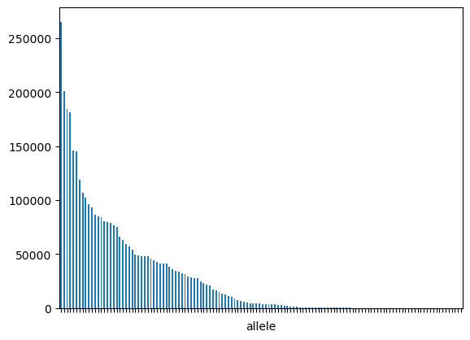
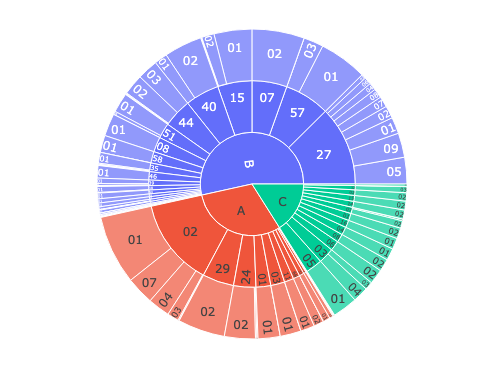
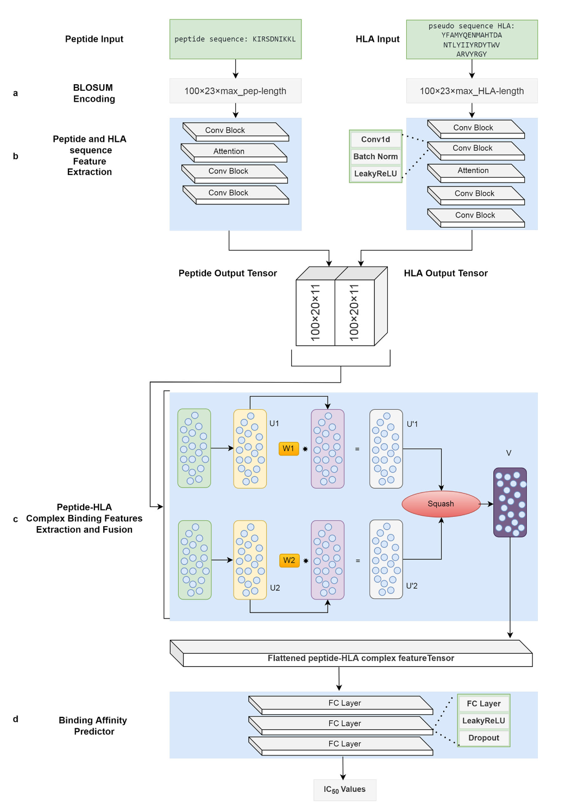
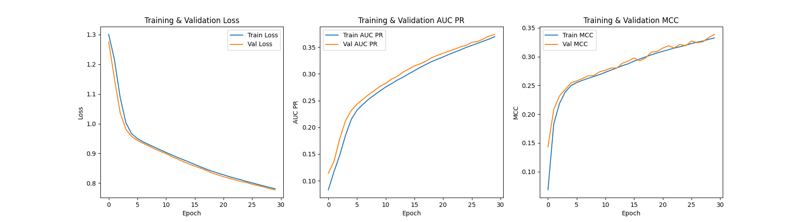
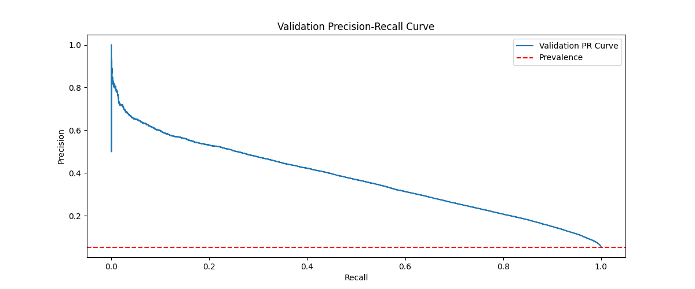

This report presents the implementation of Capsule Networks (CapsNet) for predicting MHC-peptide binding hit. The study covers dataset analysis, methodological explanation, experimental setup, and result evaluation. The advantages of CapsNet are explored through several experiments. This study is the implementation of CapsNet-MHS paper.
Capsule Networks (CapsNet) have been proposed as an alternative to traditional Convolutional Neural Networks (CNNs) to better capture spatial hierarchies. This project aims to implement CapsNet for MHC-peptide binding prediction, evaluating its performance against conventional deep learning models.
The dataset utilized is the NetMHC dataset. It comprises over 3.6 million peptide-allele pairs labeled for MHC class I binding. The distribution of alleles is heavily imbalanced.

Figure 1: Allele frequency distribution in the training set

Figure 2: Hierarchical distribution of alleles
Capsule Networks represent local features using vectors instead of scalars. Each vector's norm indicates probability, while the direction captures spatial relationships. Inputs \( u_i \) are transformed via matrices \( W_{ij} \), producing \( \hat{u}_{j|i} = W_{ij} u_i \). Outputs are computed as:
\( s_j = \sum_i c_{ij} \hat{u}_{j|i} \), and the final capsule output is: \( v_j = \frac{||s_j||^2}{1 + ||s_j||^2} \cdot \frac{s_j}{||s_j||} \)

Figure 3: Network architecture from reference [Kalemati 2023]
vast.ai for training due to computational cost
Figure 3: Training and validation loss, AUC Precision-Recal and Mathew's correlation coefficient curve for BLOSUM62 embedding

Figure 4: The final precision-recal curve
| BLOSUM Matrix | AUC-ROC |
|---|---|
| BLOSUM45 | 0.8407 |
| BLOSUM62 | 0.8375 |
| BLOSUM80 | 0.8407 |
| Metric | Value |
|---|---|
| AUC PR | 0.370 |
| MCC | 0.333 |
| Accuracy | 0.798 |
| F1-Score | 0.306 |
| Metric | Value |
|---|---|
| AUC PR | 0.374 |
| MCC | 0.339 |
| Accuracy | 0.805 |
| F1-Score | 0.314 |
CapsNet-MHC showed strong results on imbalanced data. An alternative NLP-based approach using fastText-like embeddings was tested but was computationally prohibitive due to massive training pairs.
Capsule Networks effectively capture peptide-allele interactions. While promising, further tuning and training on all folds is necessary to realize full potential.
Future efforts should focus on hyperparameter tuning, reconsidering the attention approach and deeper analysis of capsule outputs for the purpose of explainability.